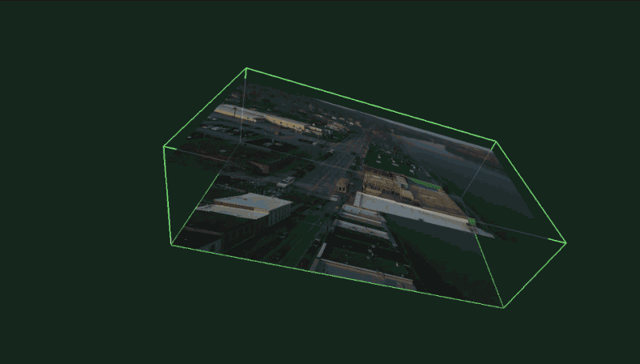

<!DOCTYPE html>
<html>
  <head>
    <meta charset="utf-8" />
    <meta name="viewport" content="width=device-width, initial-scale=1.0" />

    <title>
      Logan Williams — Isometric Spacelapse
    </title>

    <link
      rel="stylesheet"
      href="https://unpkg.com/leaflet@0.7.3/dist/leaflet.css"
    />
    <link rel="stylesheet" href="/css/main.css" />

    

    <meta name="twitter:card" content="summary_large_image" />
    <meta name="twitter:site" content="@obtusatum" />
    <meta name="twitter:creator" content="@obtusatum" />
    <meta property="og:url" content="http://subject.space/projects/isometric-spacelapse/" />

    
    <meta property="og:title" content="Isometric Spacelapse" />
     
    <meta property="og:description" content="By transposing the axes of time and image-space position, unusual aerial viewpoints can be generated. " />
      
    <meta property="og:image" content="http://subject.space/projects/isometric-spacelapse/background.jpg" />
     

    
    <script
      async
      src="https://www.googletagmanager.com/gtag/js?id=UA-87740234-3"
    ></script>
    <script>
      window.dataLayer = window.dataLayer || [];
      function gtag() {
        dataLayer.push(arguments);
      }
      gtag("js", new Date());

      gtag("config", "UA-87740234-3");
    </script>
  </head>
  <body></body>
</html>


<main>
  <header class="header">
    <h1><a href="/">Logan Williams</a></h1>
  </header>

  <div class="post">
		<h1>Isometric Spacelapse</h1>
		<p><p>By transposing the axes of time and image-space position, unusual aerial viewpoints can be generated. In these videos, all rays intersect the horizontal plane at the same angle and all objects are rendered at the same scale.</p>
<p>With this isometric view, everything is granted equal importance and nothing can be diminished to the background. Hills stand next to buildings, and the foreground, so often human, is forced to reckon with with the scale of its setting.</p>
<p><iframe src="https://player.vimeo.com/video/252461401?title=0&byline=0&portrait=0" width="640" height="360" frameborder="0" webkitallowfullscreen mozallowfullscreen allowfullscreen></iframe></p>
<p>I expanded on these ideas in a conference talk delivered at <a href="http://bangbangcon.com/">!!Con 2018</a>, where I dove deeper into geometric image formation models, video art history, and ways of seeing.</p>
<p><iframe width="640" height="360" src="https://www.youtube.com/embed/X2HAYaPdhWI" frameborder="0" allow="autoplay; encrypted-media" allowfullscreen></iframe></p>
<p></p>
<p><a href="https://github.com/loganwilliams/spacelapser/releases/tag/v0.1.2">Download the Mac OS application</a> developed during my residency at <a href="https://signalculture.org/">Signal Culture</a>. It is developed in C++ with OpenFrameworks and is <a href="https://github.com/loganwilliams/spacelapser">open source on GitHub.</a> In theory it is also compatible with Linux and Windows.</p>
<p><iframe src="https://player.vimeo.com/video/268446712?title=0&byline=0&portrait=0" width="640" height="360" frameborder="0" webkitallowfullscreen mozallowfullscreen allowfullscreen></iframe></p>
<p><iframe src="https://player.vimeo.com/video/255186410?title=0&byline=0&portrait=0" width="640" height="360" frameborder="0" webkitallowfullscreen mozallowfullscreen allowfullscreen></iframe></p>
<p><iframe src="https://player.vimeo.com/video/255180037?title=0&byline=0&portrait=0" width="640" height="360" frameborder="0" webkitallowfullscreen mozallowfullscreen allowfullscreen></iframe></p></p>
	</div>
</main>

    </body>
</html>